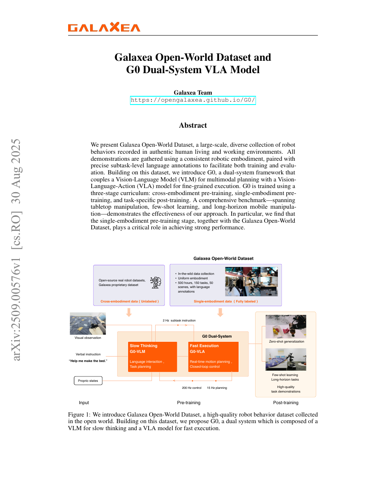

| Title | Galaxea Open-World Dataset and G0 Dual-System VLA Model（Galaxea开放世界数据集与G0双系统VLA模型） |
| Authors | Galaxea Team（Galaxea AI团队），核心贡献者：Tao Jiang、Jianning Cui、Xiao Liu（数据集操作），Tianyuan Yuan、Yicheng Liu、Chenhao Lu、Shuiqi Cheng（策略训练与评估），Hang Zhao、Huazhe Xu（许华哲）、Jiyang Gao（项目监督） |
| Affiliation | Galaxea AI（星海人工智能）——专注于具身智能机器人研发的商业化公司，提供端到端具身智能解决方案，包括Galaxea R1系列人形/移动操作机器人平台 |
| Venue | arXiv Preprint，2025年8月30日（arXiv:2509.00576 v1），投稿至 cs.RO（Robotics）。项目主页：https://opengalaxea.github.io/G0/ |
| DOI / Links | arXiv:2509.00576 | 数据集和模型即将开源（"in the coming weeks"） |
| TL;DR | 提出Galaxea开放世界数据集（500小时、150个任务、50个场景、统一机器人平台、精确子任务级语言标注），以及G0双系统框架——将VLM（慢思考/多模态规划）与VLA（快执行/精细动作控制）异步耦合，通过三阶段训练课程（跨embodiment预训练 → 单embodiment预训练 → 任务后训练）实现开放世界中移动操作机器人的长时序任务执行。核心发现：单embodiment预训练对性能至关重要，跨embodiment预训练在embodiment差异大时甚至可能损害模型性能。 |
| Inspiration Source | → What Insight It Inspired | Type |
|---|---|---|
| Kahneman的"思考，快与慢"（System 1 / System 2 双过程理论） | → 将机器人控制架构显式地拆分为"慢系统（VLM规划）"和"快系统（VLA执行）"，而非让单一模型同时承担两个角色。慢系统处理"What to do"（任务分解、场景理解），快系统处理"How to do"（动作生成、闭环控制）。两个系统异步运行在不同频率（2 Hz vs 200 Hz），实现认知与行为的解耦 | 架构 |
| Open X-Embodiment的跨embodiment训练范式与RT-X模型的教训 | → 跨embodiment数据虽然规模大，但embodiment gap（不同机器人平台的动作空间、运动学、动力学差异）可能引入负面迁移——本文通过受控实验首次系统性地验证了"在embodiment差异大时，跨embodiment预训练甚至不如从头训练"这一反直觉结论。这意味着数据规模不是唯一维度——数据质量和一致性同样关键 | 实验发现 |
| Flow Matching（连续归一化流）在动作生成中的应用（π₀模型） | → 借鉴π₀的flow matching动作专家设计——用连续归一化流替代传统的扩散模型（DDPM）来生成动作chunk，在保持生成质量的同时提供更高的推理吞吐量。同时，将flow matching与自回归离散动作预测分阶段使用：Stage-1用自回归学习通用动作先验，Stage-2用flow matching学习精确连续控制 | 方法 |
| DeepSeek-R1的推理能力用于数据增强 | → 利用推理LLM将机械的"子任务序列标注"自动转化为自然的人类风格高层指令（如"我要坐下了，你能帮我把椅子拉出来吗？"），使VLM训练数据更接近真实人机交互场景，同时大幅降低人工标注成本 | 数据策略 |
flowchart TB
subgraph DATA["数据采集层（统一平台 · 500h · 100K trajectories）"]
direction LR
ROBOT["Galaxea R1 Lite · 23-DoF
双臂6+6 + 躯干3 + 底盘6 + 夹爪2"]
TELEOP["同构遥操作 · isomorphic teleoperation
人类动作→机器人运动学直接映射"]
SCENES["50个真实场景 · 11个物理地点
住宅/餐饮/零售/办公 · 1600+物体"]
ANNOTATION["子任务级语言标注 · fixed schema
150任务类别 · 58操作技能"]
end
subgraph STAGE1["Stage 1: 跨embodiment预训练（~1700h）"]
direction LR
S1DATA["OXE 1000h + Galaxea未标注500h + 内部200h"]
S1VLM["仅训练VLM · PaLiGemma初始化
FAST tokenizer离散化动作"]
S1LOSS["自回归交叉熵损失
p(A^d_t) = Π p(a^d_i | a^d_<i, o_t, l_t, s_t)"]
end
subgraph STAGE2["Stage 2: 单embodiment预训练（500h）"]
direction LR
S2DATA["Galaxea Open-World Dataset · 含子任务标注"]
S2VLA["完整VLA训练 · VLM + Action Transformer"]
S2LOSS["Flow Matching损失
L_flow = E||v_θ - u(A_t|Ā_t)||²"]
end
subgraph POST["Post-training: 任务精调（≤100 trajs/task）"]
direction LR
PTASK["Table Bussing · Microwave
Bed Making · Blocks Stacking"]
PFEWSHOT["Few-shot: 20条轨迹 · 10 epochs"]
PFULLSHOT["Full-shot: 100条轨迹 · 4 epochs"]
end
subgraph DEPLOY["部署层: G0双系统异步执行"]
direction LR
VLM["G0-VLM · System 2 · ~2Hz
Qwen2.5-VL微调 · 任务规划+语言交互"]
VLA["G0-VLA · System 1 · ~200Hz
PaLiGemma+SigLIP+Action Transformer"]
CONTROL["实时运动规划+闭环控制
子任务指令→动作chunk A_{t:t+k}"]
end
ROBOT --> TELEOP --> SCENES --> ANNOTATION
ANNOTATION --> S1DATA
ANNOTATION --> S2DATA
S1DATA --> S1VLM --> S1LOSS
S1LOSS -->|"预训练权重"| S2VLA
S2DATA --> S2VLA --> S2LOSS
S2LOSS -->|"预训练权重"| PTASK
PTASK --> PFEWSHOT
PTASK --> PFULLSHOT
PFEWSHOT --> VLA
PFULLSHOT --> VLA
VLM -->|"子任务指令"| VLA
VLA --> CONTROL
classDef data fill:#fef7ed,stroke:#f59e0b,stroke-width:2px,color:#92400e
classDef stage1 fill:#e8f0fe,stroke:#3b82f6,stroke-width:2px,color:#1d4ed8
classDef stage2 fill:#f0ebfd,stroke:#8b5cf6,stroke-width:2px,color:#6d28d9
classDef post fill:#e6f7ee,stroke:#10b981,stroke-width:2px,color:#047857
classDef deploy fill:#ffe4e6,stroke:#f43f5e,stroke-width:2px,color:#be123c
class ROBOT,TELEOP,SCENES,ANNOTATION data
class S1DATA,S1VLM,S1LOSS stage1
class S2DATA,S2VLA,S2LOSS stage2
class PTASK,PFEWSHOT,PFULLSHOT post
class VLM,VLA,CONTROL deploy
flowchart TB
subgraph INPUT["系统输入"]
HUMAN["人类高层指令
'Help me make the bed'"]
OBS["视觉观测 o_t
头部RGB + 双腕RGB-D"]
PROP["本体感知 s_t
23-DoF关节状态"]
end
subgraph SLOW["System 2: G0-VLM（慢思考 · ~2Hz）"]
direction TB
VLMENC["Qwen2.5-VL 视觉-语言编码
历史观测 o_{t-k},...,o_t"]
TASKPLAN["任务规划与分解
'make the bed' → [move to bed, lift quilt, flatten]"]
LANGINTER["语言交互
'I am working on it!'"]
end
subgraph FAST["System 1: G0-VLA（快执行 · ~200Hz）"]
direction TB
VLAENC["PaLiGemma + SigLIP 编码
3视角图像 + 子任务指令 + 状态"]
ACTEXP["Action Transformer · Flow Matching
预测动作chunk A_{t:t+k}"]
EXEC["实时控制输出
双臂+躯干+底盘 23维动作"]
end
subgraph FEEDBACK["闭环反馈"]
ENV["物理环境交互"]
EVAL["进度评分（Progress Score）
Table Bussing / Microwave / Bed Making / Blocks"]
end
HUMAN --> VLMENC
OBS --> VLMENC
OBS --> VLAENC
PROP --> VLAENC
VLMENC --> TASKPLAN
TASKPLAN --> LANGINTER
TASKPLAN -->|"子任务指令 l_t"| VLAENC
VLAENC --> ACTEXP
ACTEXP -->|"动作chunk A_{t:t+k}"| EXEC
EXEC --> ENV
ENV -->|"新观测+状态"| OBS
ENV -->|"新观测+状态"| PROP
ENV --> EVAL
LANGINTER -.->|"语言反馈"| HUMAN
classDef input fill:#fef7ed,stroke:#f59e0b,stroke-width:2px,color:#92400e
classDef slow fill:#f0ebfd,stroke:#8b5cf6,stroke-width:2px,color:#6d28d9
classDef fast fill:#e8f0fe,stroke:#3b82f6,stroke-width:2px,color:#1d4ed8
classDef feedback fill:#e6f7ee,stroke:#10b981,stroke-width:2px,color:#047857
class HUMAN,OBS,PROP input
class VLMENC,TASKPLAN,LANGINTER slow
class VLAENC,ACTEXP,EXEC fast
class ENV,EVAL feedback
flowchart TD
subgraph PHASE1["阶段1: 数据工程建设"]
direction LR
P1A["硬件平台部署: Galaxea R1 Lite车队
11个物理地点 · 4类场景"]
P1B["同构遥操作采集: 人类→机器人直接映射
观测性+数量+质量+语言对齐 四原则"]
P1C["标注管线: 子任务级fixed schema标注
episode级+clip级双重质控"]
P1D["数据统计: 500h · 150任务 · 50场景
1600+物体 · 58技能 · 100K轨迹"]
end
subgraph PHASE2["阶段2: VLA三阶段训练"]
direction LR
P2A["Stage 1: 跨embodiment
~1700h · VLM-only · 自回归"]
P2B["Stage 2: 单embodiment
500h · VLM+Action Transformer · Flow Matching"]
P2C["Post-training: 任务精调
≤100 trajectories/task · 4-10 epochs"]
P2D["消融实验: Full vs Stage2-only vs Stage1-only
vs Scratch vs π₀ baseline"]
end
subgraph PHASE3["阶段3: VLM训练与评估"]
direction LR
P3A["数据构建: 关键帧采样+DeepSeek-R1
子任务→人类风格高层指令合成"]
P3B["Qwen2.5-VL指令微调
历史观测帧+任务名+子任务"]
P3C["基准对比: Gemini-2.5-pro
Qwen2.5-VL 72B/32B/7B · G0-VLM"]
P3D["结果: G0-VLM准确率83.3%
比最强baseline高50%+"]
end
subgraph PHASE4["阶段4: 系统部署与开源"]
direction LR
P4A["双系统异步部署: VLM 2Hz + VLA 200Hz
子任务指令管道解耦"]
P4B["Benchmark评估: 4任务×多种设置
full-shot · few-shot · 分技能分析"]
P4C["关键发现: 单embodiment预训练不可或缺
跨embodiment预训练可能有害"]
P4D["开源计划: 数据集+模型即将发布
Galaxea开源战略第一步"]
end
PHASE1 -->|"Galaxea Open-World Dataset"| PHASE2
PHASE2 -->|"预训练权重"| PHASE3
PHASE3 -->|"G0-VLM + G0-VLA"| PHASE4
P2D -.->|"反馈: embodiment gap分析"| P2A
P3D -.->|"反馈: 领域微调必要性"| P3B
P4C -.->|"反馈: 数据策略调整"| P1B
classDef p1 fill:#fef7ed,stroke:#f59e0b,stroke-width:2px,color:#92400e
classDef p2 fill:#e8f0fe,stroke:#3b82f6,stroke-width:2px,color:#1d4ed8
classDef p3 fill:#f0ebfd,stroke:#8b5cf6,stroke-width:2px,color:#6d28d9
classDef p4 fill:#e6f7ee,stroke:#10b981,stroke-width:2px,color:#047857
class P1A,P1B,P1C,P1D p1
class P2A,P2B,P2C,P2D p2
class P3A,P3B,P3C,P3D p3
class P4A,P4B,P4C,P4D p4
| 类别 | 内容 | 维度 / 频率 |
|---|---|---|
| 输入（G0-VLM） | 人类自然语言高层指令 + 头部RGB图像历史（k帧，1秒间隔）+ 机器人动作历史 | 文本 + 图像序列；~2 Hz 更新 |
| 输入（G0-VLA） | 子任务语言指令 + 三视角RGB图像（头部×1 + 双腕×2）+ 23-DoF本体感知状态 | 文本 + 多视角图像 + 关节状态向量；~15-200 Hz 更新 |
| 输出（G0-VLM） | 子任务指令序列（如"move to bed"→"lift torso and grasp quilt"→"flatten quilt"）+ 语言回复 | 离散文本序列；规划频率 ~2 Hz |
| 输出（G0-VLA） | 连续动作chunk $A_{t:t+k}$（包含双臂、躯干、底盘的23维控制信号） | 连续向量序列（k步前瞻）；控制频率 ~200 Hz |
| 目标 | 在4项覆盖桌面操作、少样本学习和长时序移动操作的benchmark上达到最高progress score | Table Bussing (6分) / Microwave (5分) / Bed Making (4分) / Blocks Stacking (6分) |
这是一个数据-模型-系统联合创新——包含三个层面的贡献：（1）数据层面：构建首个"统一embodiment + 真实开放世界 + 子任务级语言标注"的大规模机器人操作数据集，填补了现有数据集的关键空白；（2）算法层面：提出三阶段训练课程，首次通过系统消融实验揭示"单embodiment预训练 > 跨embodiment预训练"的反直觉结论，并量化了embodiment gap对模型性能的影响；（3）系统层面：将Kahneman的双过程理论落地为可部署的VLM-VLA双系统架构，实现了语义规划与实时控制的频率解耦。平台：Galaxea R1 Lite 23-DoF移动双臂机器人；场景：住宅/餐饮/零售/办公真实环境；任务：桌面整理、家电操作、床铺整理、积木搭建等长时序移动操作。
⚠ 表头用英文，正文用中文
| Prior Method | Core Idea | Why It Fails |
|---|---|---|
| Open X-Embodiment / RT-X（跨embodiment聚合数据集） | 从数十个不同机器人平台聚合数据，训练通用VLA策略（如RT-1-X、RT-2-X），期望利用"数据多样性"实现跨embodiment泛化 | 数据质量高度不一致——不同来源的标注标准、环境上下文、控制频率各异。最重要的是embodiment gap：本文通过受控实验证明，当embodiment差异大时，跨embodiment预训练不仅无益反而有害（在某些技能上甚至不如从头训练）。数据多样性不能替代数据一致性。 |
| BridgeData V2 / DROID（单平台大规模数据采集） | 在单一机器人平台上大规模采集操作数据（BridgeData V2用WidowX、DROID用Franka），验证了数据规模对VLA性能的正面影响 | 场景局限性——数据主要在实验室/受控环境中采集，缺乏真实生活场景的视觉多样性和物理交互复杂性。当模型部署到开放世界时（如带有杂乱背景的厨房），域差距（domain gap）导致性能急剧下降。此外，这些数据集的标注粒度较粗（通常只有任务级描述），缺乏子任务级的语言-动作对齐。 |
| SayCan / Hi Robot（LLM-as-Planner + VLA执行器） | 用LLM/VLM作为高层规划器（SayCan用PaLM），将高层指令分解为可执行的原子技能，由独立的底层策略执行 | 规划器与执行器使用不同的动作原语空间——SayCan的LLM规划输出的是预定义的skill affordance标签，而非语义丰富的子任务描述。这导致：（1）需要人工预定义技能库（不scalable）；（2）规划和执行之间缺乏基于自然语言的细粒度信息传递；（3）规划器不直接理解底层执行器的能力边界。 |
| π₀ / π₀.₅（统一VLA模型 + Flow Matching） | 用单一VLA模型（基于PaliGemma + Action Expert）通过flow matching直接生成动作，追求端到端的简洁性 | 单一模型架构无法有效处理长时序任务——当任务上下文超过模型的有效注意力窗口时（如铺床需要10+个子步骤），单一VLA的规划能力不足。此外，单一模型的推理延迟（~100-500ms）在高频控制需求（200Hz）下成为瓶颈。π₀本身更擅长桌面级短时序操作，而非需要全身协调的移动操作。 |
本文的核心方法分为三个层次：（1）G0-VLA的训练——三阶段课程学习，从离散自回归到连续flow matching的渐进式训练；（2）G0-VLM的训练——基于DeepSeek-R1的数据增强 + Qwen2.5-VL指令微调；（3）双系统部署——异步异构频率的规划-执行管道。以下逐一拆解关键公式。
LaTeX rendered by MathJax. 显示公式用 $$...$$，行内公式用 $...$。⚠ 符号解释请用中文。
| 参数 | 取值 | 含义 | 为什么取这个值 |
|---|---|---|---|
| Galaxea数据集规模 | 500小时 / 100K轨迹 | 数据集的总采集时长和轨迹数量 | 足够覆盖150个任务类别在50个场景中的统计多样性（每个任务在每个场景中平均有~13条轨迹）。500小时是数据质量（精细标注）和数量之间的工程平衡点 |
| 机器人自由度 | 23-DoF | 双臂6×2 + 躯干3 + 全向底盘6 + 夹爪1×2 | 23-DoF足以覆盖从桌面精细操作到全身移动操作的全部技能谱（58种技能）。躯干的3-DoF（升降+俯仰）是关键设计——允许机器人在不移动底盘的情况下扩展工作空间 |
| G0-VLA视觉编码器 | SigLIP (PaLiGemma) | 视觉-语言对齐预训练的ViT编码器 | SigLIP比CLIP在细粒度视觉特征上表现更好，更适合机器人操作（需要区分外观相似的物体）。PaLiGemma的3B参数量在性能和推理速度间取得平衡 |
| Stage 1训练数据量 | ~1700小时 | OXE 1000h + Galaxea未标注500h + 内部200h | 1700小时提供了足够多的embodiment多样性来学习通用的视觉-动作先验。但论文发现这部分数据的实际贡献有限——当embodiment gap大时，这1700小时可能还不如500小时的单embodiment数据有效 |
| G0-VLM基座模型 | Qwen2.5-VL | 开源视觉-语言模型，用于System 2规划器 | 选择Qwen2.5-VL而非更大的专有模型（如Gemini）是为了在开源可复现性和性能之间取得平衡。实验证明经过领域微调后，Qwen2.5-VL-7B可以大幅超越未微调的Gemini-2.5-pro |
| 动作chunk长度 | H步前瞻 | VLA一次预测未来H步的动作序列 | 动作chunking是近年来VLA的标准做法——预测多步动作可以平滑执行轨迹、减少推理调用频率。H的具体值需要平衡动作连贯性和预测精度 |
| VLM规划频率 | ~2 Hz | System 2的推理更新频率 | 2 Hz远低于VLA的200 Hz是因为：（1）任务规划不需要毫秒级更新；（2）VLM的前向传播延迟（数百毫秒）限制了更新频率；（3）2 Hz已经足够跟踪任务进展并适时发出新的子任务指令 |
理解G0需要掌握三个关键基础原理：双过程理论（为什么快慢系统解耦是必要的）、Flow Matching（为什么比Diffusion更适合实时控制）、Embodiment Gap（为什么数据多样性不是免费的午餐）。
在机器人控制语境中，System 1（快思考）对应的是条件反射式的感知-动作映射——看到物体、子任务指令说"抓取杯子"、手就伸过去。这不需要深度推理，需要的是高频、稳定、精确的动作生成。System 2（慢思考）对应的是需要推理和规划的场景理解——理解"帮我整理桌面"意味着先归类物品、再决定每类物品的去向、再按逻辑顺序安排子任务。这需要VLM的语义理解和长期记忆能力，但不能因为思考延迟而阻塞实时控制。
角色：从感知到语义的抽象层——理解场景内容、解析人类意图、分解为可执行子任务。
输入：人类自然语言指令 + 多帧历史图像 + 机器人动作历史。
输出：子任务指令序列 + 语言回复。
频率：~2 Hz（每次推理约500ms，Qwen2.5-VL的前向传播+自回归解码延迟）。
训练：基于Galaxea数据集的子任务标注，用DeepSeek-R1合成人类风格指令，对Qwen2.5-VL进行指令微调。
为什么用语言作为接口？：语言是人类和机器人都能理解的通用表示——人类用自然语言下达指令，机器人用自然语言接收子任务。这避免了设计显式的action schema或skill taxonomy。
角色：从语义到物理的映射层——将子任务指令和多视角感知转化为精确的23-DoF控制信号。
输入：子任务指令 + 三视角RGB图像 + 23-DoF本体感知状态。
输出：连续动作chunk（H步前瞻，23维控制信号）。
频率：~200 Hz（Flow Matching的少步采样 + Action Transformer的轻量前向传播）。
训练：三阶段课程——Stage 1（跨embodiment自回归）→ Stage 2（单embodiment Flow Matching）→ Post-training（任务精调）。
为什么用Flow Matching？：相比DDPM diffusion，Flow Matching的推理路径更直（straighter trajectories），用更少的采样步数（如5-10步 vs 50-100步）即可生成高质量动作 → 适合高频控制。
| 对比维度 | DDPM Diffusion（π₀ 使用） | Flow Matching（G0 Stage 2 使用） |
|---|---|---|
| 生成路径 | 弯曲（方差调度非线性） | 直线（线性插值） |
| 采样步数 | 50-100步（慢） | 5-10步（快） |
| 推理延迟 | ~500ms-2s（不适合实时控制） | ~50-100ms（适合200Hz控制） |
| 训练稳定性 | 需要仔细调噪声调度 | 训练更稳定（直线路径无奇点） |
| 生成质量 | 高（多步精炼） | 高（路径更短 → 误差累积更少） |
| 适用场景 | 离线规划、开环执行 | 在线实时闭环控制 |
本文的关键实验证据：在Bed Making任务的chassis control和torso control两个子技能上，仅经过Stage-1（跨embodiment）预训练的模型甚至不如从头训练的模型。这说明OXE中缺乏移动底盘和躯干的控制数据，跨embodiment预训练不仅没有帮助，反而破坏了模型学习这些embodiment-specific技能的能力。这一发现对VLA社区有深远影响——在将跨embodiment数据纳入预训练之前，必须仔细评估embodiment gap的大小和性质。
📷 论文原图截图。图片保存至 figures/ 子目录。论文overview图已保存为 overview.png。

📷 请将截图保存为figures/overview.png本图展示了：Galaxea项目的完整技术栈总览——左上角展示了Galaxea开放世界数据集与现有开源数据集的对比（跨embodiment未标注 vs 单一embodiment全标注）；右上角展示了数据采集的三大特点（真实环境采集、统一机器人平台、500小时/150任务/50场景/含语言标注）；左下角展示了G0双系统的工作原理——VLM以2 Hz频率接收视觉观测和语言指令进行子任务规划，VLA以200 Hz频率接收本体状态和子任务指令进行实时动作执行；右下角展示了G0的能力维度（零样本泛化、少样本学习、长时序任务、高质量演示）。
figures/dataset_stats.pngFig. 2 展示了：(a) Galaxea R1 Lite机器人平台——双臂各6-DoF、3-DoF躯干（升降+俯仰）、全向底盘（3个全向转向轮，最高速1.5 m/s）、球形手腕+平行夹爪（5 kg负载、60 cm臂展）、头部立体RGB相机+双腕Intel RealSense D405 RGB-D相机。(b) 数据采集的多样化真实场景——住宅、厨房、零售店、办公室，每类场景中的物体和任务由场景本身自然定义。
Fig. 3 展示了：(a) 场景分布——交互时间分布在四类场景中：住宅（主要）、零售、餐饮、办公。(b) 物体分布——涵盖电子产品、家居用品、家具、消耗品、工具等大类，超过1600种独特物体。轨迹数在物体类别间呈长尾分布——常见物体（如家具、餐具）有大量轨迹，罕见物体也有覆盖。
Fig. 4 展示了：(a) 任务时长分布——大多数任务在0.5-2分钟之间，但数据集也包含长达3.5分钟的长时序任务（长尾分布）。(b) 任务复杂度分布（子任务数量）——从简单的2-3步任务到复杂的12步任务，覆盖了完整的复杂度谱系。
Fig. 5 展示了：(a) 身体部位使用分布——仅手臂31.8%、躯干+手臂33.0%、底盘+手臂20.1%、全身15.1%。这个分布很重要——它说明数据集中既有简单的桌面操作，也有需要全身协调的复杂动作。(b) 技能分布——58种技能的频率呈长尾分布，高频技能（pick、place）和低频专业技能的覆盖都很好。
figures/data_samples.png本图展示了：5个代表性任务的完整子任务标注序列——每个任务都有两行：LABEL行展示标注的子任务指令序列，ROBOT EXECUTION行展示对应的机器人执行画面。5个任务展现了从精细双臂操作到全身移动操作的完整能力谱系：
figures/architecture.png本图展示了：G0-VLA在Stage 1和Stage 2/Post-training两个阶段的架构差异——这是理解三阶段训练课程设计动机的关键图。
figures/benchmarks.pngFig. 8 展示了：四个评估benchmark的实际场景——Table Bussing（整理桌面：笔入笔筒+挂耳机+放书）、Microwave Operation（微波炉操作：开门+放食物+放盘子+关门）、Bed Making（铺床：移动+抬躯干+抓被子+后仰+移动抚平）、Blocks Stacking（积木拼字：按指令搭出特定单词）。
Fig. 9 展示了（微调benchmark结果——全文最核心的实验）：G0 (Full)在平均progress score上表现最优，尤其在物体抓取任务（Table Bussing、Microwave Operation、Bed Making）中优势显著。G0 (Stage-2 400h)和G0 (Stage-2 200h)在语言跟随和动作一致性上领先，全身控制能力最强。G0 (Stage-1)在所有预训练模型中表现最差——这是本文最重要的反直觉发现：仅有跨embodiment预训练不仅帮助有限，甚至可能不如从头训练。
Fig. 10 展示了（少样本迁移——每条任务仅20条轨迹微调）：Stage-2预训练模型在少样本设置下显著优于无Stage-2预训练的模型，且产生明显更平滑稳定的动作。而Stage-1预训练相比从头训练没有明显优势——这进一步验证了跨embodiment预训练在少样本场景下的局限性。
Fig. 11 展示了（Bed Making 分技能分析——全文最具诊断性的实验）：Stage-2单embodiment预训练大幅提升了底盘控制和躯干控制的性能（这两个是Galaxea R1 Lite特有的embodiment-specific技能，在OXE中不存在）。相比之下，Stage-1和π₀（使用跨embodiment数据）在chassis-related instruction following上表现更差，torso control精度也更低——在部分指标上甚至不如从头训练。
| 数据问题 | 潜在困难 | 严重程度 |
|---|---|---|
| Embodiment gap的度量缺失 | 论文通过实验发现了"跨embodiment预训练可能有害"，但未定义embodiment gap的定量度量。不同机器人之间的gap在哪些维度（关节数、运动学链、工作空间、控制频率、动力学参数）最关键？缺乏度量方法意味着无法预测跨embodiment迁移的效果——只能"试了才知道" | ★★★★★ |
| 场景过拟合风险 | 50个场景虽然在机器人数据集中算多样化，但从机器学习角度看仍然有限。模型可能学到的是"场景特定的视觉线索"而非"任务语义"——如"看到蓝色床单就执行铺床动作"而非"理解铺床的语义"。缺乏跨场景泛化的系统评估 | ★★★★ |
| 子任务标注的一致性与覆盖度 | Fixed schema虽然提高了标注速度，但可能遗漏某些边界情况（如子任务执行到一半时操作员修正了错误——这个修正动作应该标注为什么？）。标注指南的质量直接影响VLM和VLA的训练信号质量 | ★★★★ |
| VLM合成数据的质量控制 | DeepSeek-R1合成的人类风格指令可能会产生hallucination——例如将子任务序列错误推理为不存在的场景上下文，或生成与真实场景不匹配的语言指令。这些错误会传播到G0-VLM的训练中，影响其规划质量 | ★★★ |
| 单平台数据的生态锁定 | 数据集的全部价值都绑定在Galaxea R1 Lite上——如果目标机器人更换为其他平台（如H1、Figure 02），数据集的大部分价值将丧失（因为embodiment gap太大）。这限制了数据集作为"通用VLA benchmark"的长期价值 | ★★★ |
| 参考文献 | 为什么重要 |
|---|---|
| Black et al. (2024) — π₀: A Vision-Language-Action Flow Model for General Robot Control. arXiv:2410.24164 | G0-VLA的架构直接借鉴了π₀（PaLiGemma + Action Expert + Flow Matching）——理解π₀是理解G0架构的前提。同时π₀作为baseline在G0的实验中出现（Fig. 9-11），了解其能力边界有助于解读G0的实验结果。π₀的贡献在于证明了Flow Matching在动作生成中的有效性，G0的贡献在于揭示了数据策略比生成范式更关键。 |
| Open X-Embodiment / RT-X (2023) — Open X-Embodiment: Robotic Learning Datasets and RT-X Models. CoRL 2023 | 跨embodiment数据聚合范式的最重要代表——G0的核心论点（"跨embodiment预训练可能有害"）很大程度上是针对OXE范式的反思和纠正。理解OXE的数据构成和RT-X模型的训练方式，是理解G0创新点的必要背景。 |
| Kahneman (2011) — Thinking, Fast and Slow. macmillan | G0双系统架构的理论基础——System 1（快/直觉/自动）和System 2（慢/推理/控制）的认知心理学框架。虽然这是一本心理学著作而非技术论文，但理解双过程理论对于把握G0的架构设计哲学至关重要。 |
| Physical Intelligence (2025) — π₀.₅: A Vision-Language-Action Model with Open-World Generalization. arXiv:2504.16054 | π₀的升级版本——G0的Action Transformer和训练方法"类似π₀.₅"（原文"employing two training methods similar to that of π₀.₅"）。π₀.₅在开放世界泛化上的进展与G0形成互补——前者侧重于模型架构，后者侧重于数据和训练策略。 |
| Ahn et al. (2022) — Do As I Can, Not As I Say: Grounding Language in Robotic Affordances. arXiv:2204.01691 (SayCan) | LLM-as-Planner范式的开创性工作——G0-VLM的"用VLM做任务规划"的思路可以追溯到SayCan。但SayCan使用预定义的skill affordance而非自然语言子任务指令，G0在这个关键设计点上做出了改进。 |